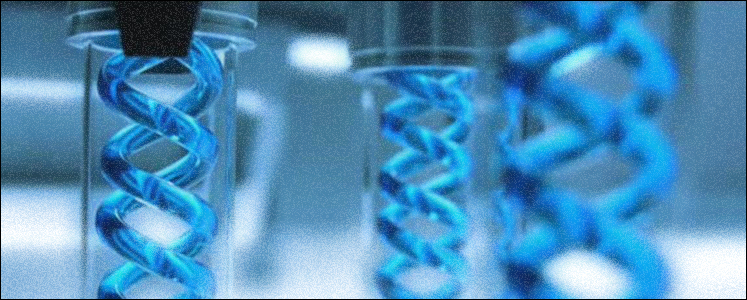
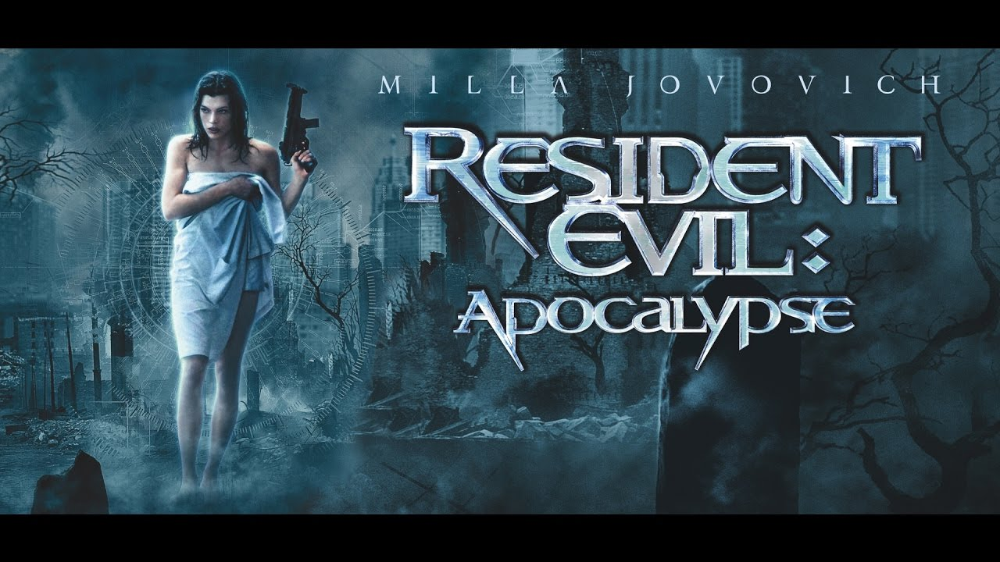
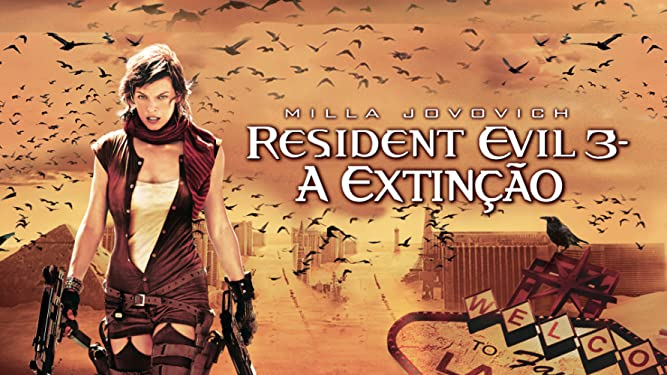
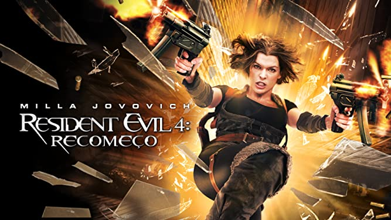
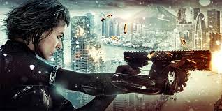
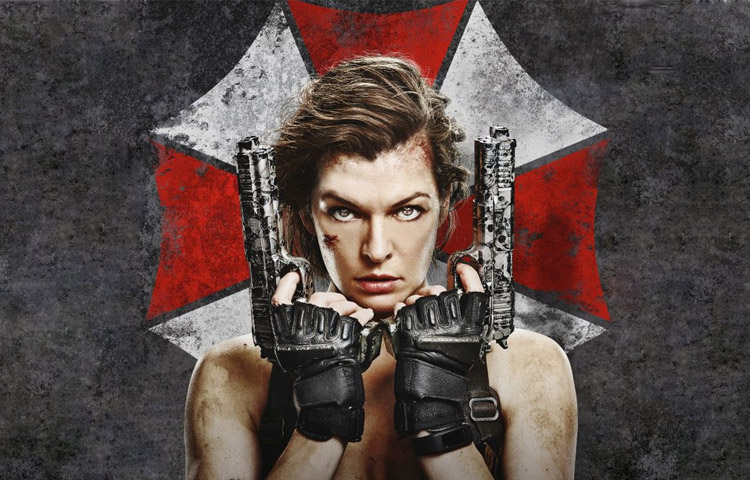
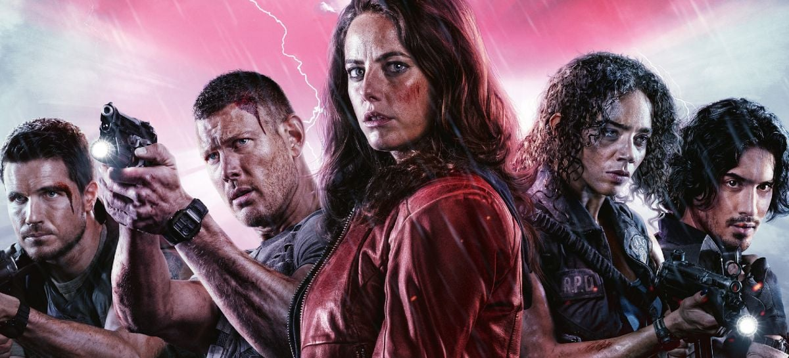

Descubra os Filmes de Resident Evil
Resident Evil nos Cinemas
A franquia Resident Evil é tão bem sucedida que, além dos jogos, ainda possui um vasto histórico de filmes, baseados em sua história e em seu universo. Estes filmes de Resident Evil representam um cenário totalmente paralelo ao dos jogos, e eles são não apenas autorizados, mas também são supervisionados de perto pela Capcom. Ainda assim, para agradar aos fãs que não gostam dessas side-stories hollywoodianas, a Capcom já lançou também uma gama de filmes e séries de animação. Todas essas animações fazem parte oficialmente da cronologia da franquia e têm seus acontecimentos tomados como 100% complementares para a série de jogos. Conheça abaixo o universo cinematográfico completo da franquia Resident Evil, com todos os filmes de Resident Evil.
Resident Evil: O Hóspede Maldito
Alguma coisa terrível está oculta na “Colméia”, um enorme laboratório subterrâneo utilizado para pesquisa genética que é controlado pela Umbrella, uma dos maiores conglomerados do mundo. Lá há uma epidemia do T-Vírus, uma arma biológica de grande poder que acaba matando todos os cientistas que lá trabalhavam. Na verdade se eles tivessem sido mortos realmente teria sido ótimo, mas todos são transformados em zumbis, que sentem uma fome incontrolável e transformam todas as suas vítimas em outros zumbis. Quando isto acontece Alice, que não sabe bem quem ela é, e Rain Ocampo se integram a um comando que entra na “Colméia” para entender e tentar controlar a situação. Porém isto tem de ser feito muito rápido, pois em três horas “Rainha Vermelha”, o supercomputador que controla o local, o selará para sempre e quem estiver lá dentro estará fatalmente condenado a se tornar um zumbi.
Resident Evil: Apocalipse
Desde que foi capturada pela Corporação Umbrella, Alice passou por várias experiências biogênicas. Ela teve seus genes modificados, o que fez com que adquirisse poderes, sentidos e agilidade sobre-humanos. Agora ela precisa retornar à cidade de Racoon, onde recebe o apoio de Jill Valentine e Carlos Olivera para eliminar um vírus mortal que ameaça fazer com que todo ser humano retorne como morto-vivo.
Resident Evil: A Extinção
O T-Vírus experimental, criado pela Umbrella Corporation, foi liberado no mundo, transformando a população em zumbis que se alimentam de carne humana. Com as cidades sem segurança alguma, Carlos Olivera e L.J., juntamente com as sobreviventes K-Mart e Betty , reúnem um grupo e fogem pelo deserto, em um comboio blindado. Eles procuram outras pessoas que não estejam infectadas, mas apenas encontram outros mortos-vivos. O grupo é acompanhado pelo dr. Isaacs (Iain Glen), que está num complexo laboratorial subterrâneo da Umbrella Corporation, escondido sob uma torre de rádio abandonada em Nevada. Isaacs acompanha também Alice, que, após ser capturada pela Umbrella, foi submetida a um teste biogenético que alterou sua configuração genética. Agora transformando-se constantemente e sob o risco de ser traída pelo seu próprio corpo, Alice segue o comboio e tenta conduzi-los ao seu destino: o Alasca, onde acreditam que estarão livres dos zumbis.
Resident Evil: Recomeço
Em um mundo devastado pela infecção por um vírus que faz com que suas vítimas se tornem zumbis, Alice (Milla Jovovich) segue sua jornada em busca de sobreviventes. O confronto com a Umbrella Corporation atinge um novo nível, o que faz com que Alice receba a inesperada ajuda de um velho amigo. Los Angeles aparenta ser um local seguro para os não-infectados, mas ao chegarem à cidade eles descobrem que foram atraídos para uma armadilha mortal.
Resident Evil: Retribuição
Em Resident Evil Retribuição, fruto de uma das experiências das Umbrella Corporation, Alice acorda misteriosamente em outra realidade, como se nada tivesse acontecido no planeta Terra. Mas as sequelas do vírus T logo aparecem na forma de zumbis famintos por carne humana e ela descobre, novamente, fazer parte de um novo e viajante experimento. Dentro das intalações da terrível corporação, a guerreira descobre que um antigo inimigo pode estar por trás de um plano para salvar não só ela, mas também seus antigos companheiros de luta, como Ada , entre outros. Agora reunidos, eles lutarão lado a lado num combate sangrento, que os levará a uma importante e inacreditável revelação. Só existe um problema, Jill Valentine e Rain Ocampo, sob as ordens da poderosa Rainha Vermelha, não estão dispostas a facilitar as coisas para o grupo, que ainda por cima corre contra o tempo.
Resident Evil: O Capítulo Final
Sobrevivente do massacre zumbi, Alice retorna para onde o pesadelo começou, Raccoon City, onde a Umbrella Corporation reúne suas forças para um ataque final contra os remanescentes do apocalipse. Para vencer a dura batalha final e salvar a raça humana, a heroína recruta velhos e novos amigos.
Resident Evil: Bem-Vindo a Raccoon City
O novo filme de Resident Evil entitulado Resident Evil: Bem-Vindo a Raccoon City se passa quando uma vez próspera empresa farmaceutica Corporação Umbrella que atuava em Raccoon City agora é nada mais do que uma cidade fantasma. O êxodo da empresa deixou a cidade cheia de perigos ainda a serem descobertos. Mas quando o mal é liberado, a população local é ameaçada e apenas um grupo de sobreviventes sobraram para descobrir o mal que se esconde na cidade e na antiga Umbrella para sobreviver a noite.